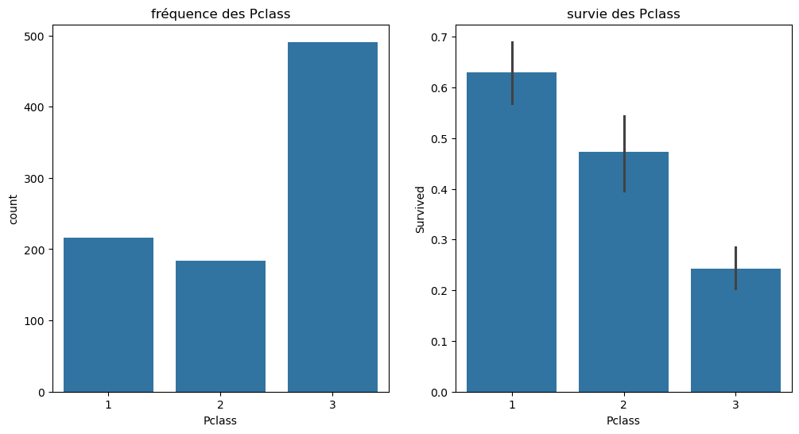
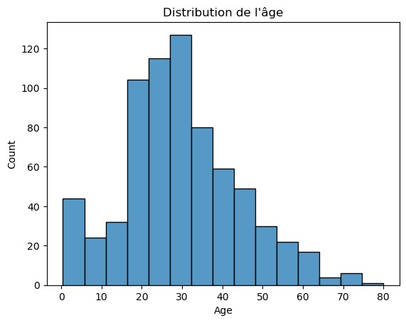
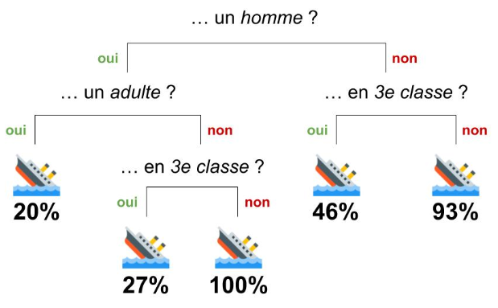

TrainingData['Ticket'].str.split("/").str.len()0 2
1 1
2 2
3 1
4 1
..
886 1
887 1
888 2
889 1
890 1
Name: Ticket, Length: 891, dtype: int64
Ce tutoriel repose sur les données et le défi exemple de la communauté kaggle sur les données du titanic.
Il s’agit à partir de la liste des passagers du titanic et de leur survie ou non de prédire la chance de survie d’un individu en fonction de son nom, age, sexe, situation familiale, économique…
Ce notebook est inspiré par https://www.kaggle.com/mukultiwari/titanic-top-14-with-random-forest
::: {#cell-1 .cell _cell_guid=‘b11366bd-b985-4df1-9630-b2d57f60d0f0’ _uuid=‘2da21fe9ea560ec76cded00d85f84caa7932a126’ tags=‘[]’ execution_count=2}
import pandas as pd ; import numpy as np
import matplotlib.pyplot as plt
import multiprocessing
from sklearn.preprocessing import LabelEncoder, OneHotEncoder
from sklearn.model_selection import train_test_split
import pathlib
from sklearn.preprocessing import MinMaxScaler
from sklearn.ensemble import RandomForestClassifier
import time
import os
%matplotlib inline
#import warnings
#warnings.filterwarnings('ignore'):::
On va utiliser la librairie pandas pour lire les données, on y a déposé le jeu de donnée disponible sur Kaggle :
train.csv contient les données d’apprentissage, c’est-à-dire les variables décrivants des individus et s’ils ont survécus ou non ;test.csv contient uniquement la description d’individu dont il faut prédire les chances de survie.::: {#cell-3 .cell _cell_guid=‘096ddef0-fc1a-4a65-bd56-82e5b3ef3d96’ _uuid=‘fdcb49f7845aae42bceb3216b3a2f09374c762ba’ tags=‘[]’ execution_count=65}
#os.chdir('/home/coder/work/ensae-reproductibilite-application')
TrainingData = pd.read_csv('train.csv')
TrainingData.head()| PassengerId | Survived | Pclass | Name | Sex | Age | SibSp | Parch | Ticket | Fare | Cabin | Embarked | |
|---|---|---|---|---|---|---|---|---|---|---|---|---|
| 0 | 1 | 0 | 3 | Braund, Mr. Owen Harris | male | 22.0 | 1 | 0 | A/5 21171 | 7.2500 | NaN | S |
| 1 | 2 | 1 | 1 | Cumings, Mrs. John Bradley (Florence Briggs Th... | female | 38.0 | 1 | 0 | PC 17599 | 71.2833 | C85 | C |
| 2 | 3 | 1 | 3 | Heikkinen, Miss. Laina | female | 26.0 | 0 | 0 | STON/O2. 3101282 | 7.9250 | NaN | S |
| 3 | 4 | 1 | 1 | Futrelle, Mrs. Jacques Heath (Lily May Peel) | female | 35.0 | 1 | 0 | 113803 | 53.1000 | C123 | S |
| 4 | 5 | 0 | 3 | Allen, Mr. William Henry | male | 35.0 | 0 | 0 | 373450 | 8.0500 | NaN | S |
:::
TrainingData['Ticket'].str.split("/").str.len()0 2
1 1
2 2
3 1
4 1
..
886 1
887 1
888 2
889 1
890 1
Name: Ticket, Length: 891, dtype: int64::: {#cell-5 .cell _cell_guid=‘b02f3b71-dd0f-4c22-8e48-fc4ee8616e21’ _uuid=‘5ceeb0b9a9ddd42db685a5e5f0503e01788a016a’ tags=‘[]’ execution_count=62}
TrainingData['Name'].str.split(",").str.len()0 2
1 2
2 2
3 2
4 2
..
886 2
887 2
888 2
889 2
890 2
Name: Name, Length: 891, dtype: int64:::
Avec la méthode .info, on pourrait vérifier que notre dataset a :
PassengerId, Survived, Pclass, Age, SibSp, Parch, Fare
PassengerId qui est l’identifiant du passager dans le datasetSurvived qui est la variable à prédire la variable “cible”PClass qui est une indication de la strate socio économiqueSibSp et Parch qui permettent de déterminer la situation familiale (époux, mère, fille…)Fare qui est un prix.Name, Sex, Ticket un identifiant de ticket, Cabin un identifiant de cabin, Embarked le port d’embarquation (C = Cherbourg, Q = Queenstown, S = Southampton)n_trees = 20
max_depth =None
max_features='sqrt'::: {#cell-9 .cell _cell_guid=‘f6bd235e-5670-4d21-b0eb-bececfc1757a’ _uuid=‘6c44f4bd0762061bedd908dcbe854b14ae9f0966’ tags=‘[]’ execution_count=45}
TrainingData.isnull().sum()Survived 0
Pclass 0
Name 0
Sex 0
Age 177
SibSp 0
Parch 0
Ticket 0
Fare 0
Cabin 687
Embarked 2
dtype: int64:::
Comme généralement en machine learning, il va falloir traiter ces valeurs manquantes en imputant des valeurs : * dans le train dataset ( Age 177 manquants, Cabin 687 manquants, Embarked 2 manquants) * dans le test dataset ( Age 86 manquants, Cabin 327 manquants, Fare 1 manquant)
Avant d’entrainer un modèle, il y a généralement une phase exploratoire du dataset que nous allons réduire ici au minimum. Il y a aussi selon le contexte du feature engineering qui est probablement l’une des composantes les plus compliquées du machine learning, il s’agit selon le contexte et le problème de créer des variables qui ont un sens pour contribuer à résoudre notre problématique.
Ici, on peut en faire un exemple naturellement sur le nom de l’invidu et instinctivement en extrayant le titre du nom des individus, mais cela peut etre beaucoup moins naturel selon les problèmes voire même complètement un état de l’art si on prend l’exemple de la modélisation des images pour le machine learning ou il s’agit, par exemple, de proposer des valeurs pondérées par sous division de partie d’image.
Une variable catégorique qui donne une idée de la classe socio-économique de la personne dont on donne un exemple avec seaborn pour visualiser la contribution https://seaborn.pydata.org/
Clairement chaque classe n’avait pas la meme chance de survie, n’est ce pas Jack?
import seaborn as sns::: {#cell-14 .cell _cell_guid=‘cd1e5c45-6156-4544-b705-b86ff92c6d38’ _uuid=‘e0f993a30dc3620a76fe189334bf418b575f2ae7’ tags=‘[]’ execution_count=47}
fig, axes=plt.subplots(1,2, figsize=(12, 6)) #layout matplotlib 1 ligne 2 colonnes taile 16*8
fig1_pclass=sns.countplot(data=TrainingData, x ="Pclass", ax=axes[0]).set_title("fréquence des Pclass")
fig2_pclass=sns.barplot(data=TrainingData, x= "Pclass",y= "Survived", ax=axes[1]).set_title("survie des Pclass")
:::
::: {#cell-16 .cell _cell_guid=‘1477483f-069b-43f3-abff-d9764aa08238’ _uuid=‘4159c5b49bc74aa3792fbd86ef7136498dc4e12d’ tags=‘[]’ execution_count=48}
sns.histplot(data= TrainingData, x='Age',bins=15, kde=False ) .set_title("Distribution de l'âge")
plt.show()
:::
A partir de cette analyse rapide, on va proposer les transformations suivantes:
Age: il nous faut traiter les Null, on impute à la moyenne même s’il y a mieux à faire…Embarked: il a 2 valeurs manquantes qu’on ajoute à la valeur la plus fréquente SFare : même sort que Age on impute à la moyennehasCabin : Le nombre de Null étant importante on va ajouter la variable 1 ou 0 pour ne retenir que si la personne avait une cabine ou non::: {#cell-19 .cell _cell_guid=‘b954644f-19d5-4edc-acc8-cf943a58534b’ _uuid=‘74d6076bd9236daf2cefd6c32b79119f6437923d’ tags=‘[]’ execution_count=49}
# Voila nos données d'apprentissage
TrainingData.head()| Survived | Pclass | Name | Sex | Age | SibSp | Parch | Ticket | Fare | Cabin | Embarked | |
|---|---|---|---|---|---|---|---|---|---|---|---|
| 0 | 0 | 3 | Braund, Mr. Owen Harris | male | 22.0 | 1 | 0 | A/5 21171 | 7.2500 | NaN | S |
| 1 | 1 | 1 | Cumings, Mrs. John Bradley (Florence Briggs Th... | female | 38.0 | 1 | 0 | PC 17599 | 71.2833 | C85 | C |
| 2 | 1 | 3 | Heikkinen, Miss. Laina | female | 26.0 | 0 | 0 | STON/O2. 3101282 | 7.9250 | NaN | S |
| 3 | 1 | 1 | Futrelle, Mrs. Jacques Heath (Lily May Peel) | female | 35.0 | 1 | 0 | 113803 | 53.1000 | C123 | S |
| 4 | 0 | 3 | Allen, Mr. William Henry | male | 35.0 | 0 | 0 | 373450 | 8.0500 | NaN | S |
:::
from sklearn.preprocessing import MinMaxScaler, OneHotEncoder
from sklearn.ensemble import RandomForestClassifier
from sklearn.impute import SimpleImputer
from sklearn.pipeline import Pipeline
from sklearn.compose import ColumnTransformer
numeric_features=["Age", "Fare"]
categorical_features=["Embarked", "Sex"]
numeric_transformer = Pipeline(steps=[("imputer", SimpleImputer(strategy="median")),
("scaler", MinMaxScaler()),])
categorical_transformer = Pipeline(steps=[("imputer", SimpleImputer(strategy="most_frequent")),("onehot", OneHotEncoder()),])
preprocessor = ColumnTransformer(
transformers=[
("Preprocessing numerical", numeric_transformer, numeric_features),
(
"Preprocessing categorical",
categorical_transformer,
categorical_features,
),
]
)pipe = Pipeline(
[
("preprocessor", preprocessor),
("classifier", RandomForestClassifier(n_estimators=20)),
]
)
pipePipeline(steps=[('preprocessor',
ColumnTransformer(transformers=[('Preprocessing numerical',
Pipeline(steps=[('imputer',
SimpleImputer(strategy='median')),
('scaler',
MinMaxScaler())]),
['Age', 'Fare']),
('Preprocessing categorical',
Pipeline(steps=[('imputer',
SimpleImputer(strategy='most_frequent')),
('onehot',
OneHotEncoder())]),
['Embarked', 'Sex'])])),
('classifier', RandomForestClassifier(n_estimators=20))])In a Jupyter environment, please rerun this cell to show the HTML representation or trust the notebook. Pipeline(steps=[('preprocessor',
ColumnTransformer(transformers=[('Preprocessing numerical',
Pipeline(steps=[('imputer',
SimpleImputer(strategy='median')),
('scaler',
MinMaxScaler())]),
['Age', 'Fare']),
('Preprocessing categorical',
Pipeline(steps=[('imputer',
SimpleImputer(strategy='most_frequent')),
('onehot',
OneHotEncoder())]),
['Embarked', 'Sex'])])),
('classifier', RandomForestClassifier(n_estimators=20))])ColumnTransformer(transformers=[('Preprocessing numerical',
Pipeline(steps=[('imputer',
SimpleImputer(strategy='median')),
('scaler', MinMaxScaler())]),
['Age', 'Fare']),
('Preprocessing categorical',
Pipeline(steps=[('imputer',
SimpleImputer(strategy='most_frequent')),
('onehot', OneHotEncoder())]),
['Embarked', 'Sex'])])['Age', 'Fare']
SimpleImputer(strategy='median')
MinMaxScaler()
['Embarked', 'Sex']
SimpleImputer(strategy='most_frequent')
OneHotEncoder()
RandomForestClassifier(n_estimators=20)
On split notre dataset d’apprentisage pour faire de la validation croisée une partie pour apprendre une partie pour regarder le score.
Prenons arbitrairement 10% du dataset en test et 90% pour l’apprentissage.
::: {#cell-23 .cell _cell_guid=‘b768a96d-8f55-440f-b268-26fb613acc59’ _uuid=‘dfcfa465aa94260c2db0a6c87c9dea05cc0c45de’ tags=‘[]’ execution_count=52}
y = TrainingData["Survived"]
X = TrainingData.drop("Survived", axis = 'columns')
X_train, X_test, y_train, y_test = train_test_split(X, y, test_size=0.1)
pd.concat([X_train, y_train]).to_csv("train.csv")
pd.concat([X_test, y_test]).to_csv("test.csv"):::
jetonapi = "$trotskitueleski1917"Les forets aléatoires sont des algorithmes souvent performants en ce qui concerne les classifications.
L’idée est simple : * On prend dans le dataset une partie des données et une partie des variables au hasard. * On fait un arbre de décision sur ces données tirées aléatoirement, l’arbre de décision étant un algorithme permettant de déterminer la variable et sa valeur qui permet de séparer au mieux la population par rapport à notre variable cible le but étant de descendre aux feuilles les plus pures.

from sklearn.preprocessing import LabelEncoder, OneHotEncoder
from sklearn.model_selection import train_test_split
import pathlib
from sklearn.preprocessing import MinMaxScaler
from sklearn.ensemble import RandomForestClassifier::: {#cell-27 .cell _cell_guid=‘39d76ad5-c0b0-4007-b04d-f885e67bd0d3’ _uuid=‘8c304bf4dca9102a7c78af2c4c6298caf46a1ed9’ scrolled=‘true’ tags=‘[]’ execution_count=55}
pipe.fit(X_train, y_train)Pipeline(steps=[('preprocessor',
ColumnTransformer(transformers=[('Preprocessing numerical',
Pipeline(steps=[('imputer',
SimpleImputer(strategy='median')),
('scaler',
MinMaxScaler())]),
['Age', 'Fare']),
('Preprocessing categorical',
Pipeline(steps=[('imputer',
SimpleImputer(strategy='most_frequent')),
('onehot',
OneHotEncoder())]),
['Embarked', 'Sex'])])),
('classifier', RandomForestClassifier(n_estimators=20))])In a Jupyter environment, please rerun this cell to show the HTML representation or trust the notebook. Pipeline(steps=[('preprocessor',
ColumnTransformer(transformers=[('Preprocessing numerical',
Pipeline(steps=[('imputer',
SimpleImputer(strategy='median')),
('scaler',
MinMaxScaler())]),
['Age', 'Fare']),
('Preprocessing categorical',
Pipeline(steps=[('imputer',
SimpleImputer(strategy='most_frequent')),
('onehot',
OneHotEncoder())]),
['Embarked', 'Sex'])])),
('classifier', RandomForestClassifier(n_estimators=20))])ColumnTransformer(transformers=[('Preprocessing numerical',
Pipeline(steps=[('imputer',
SimpleImputer(strategy='median')),
('scaler', MinMaxScaler())]),
['Age', 'Fare']),
('Preprocessing categorical',
Pipeline(steps=[('imputer',
SimpleImputer(strategy='most_frequent')),
('onehot', OneHotEncoder())]),
['Embarked', 'Sex'])])['Age', 'Fare']
SimpleImputer(strategy='median')
MinMaxScaler()
['Embarked', 'Sex']
SimpleImputer(strategy='most_frequent')
OneHotEncoder()
RandomForestClassifier(n_estimators=20)
:::
::: {#cell-28 .cell _cell_guid=‘2d5be6b3-51f3-4b79-af78-53e2550edc69’ _uuid=‘861630a841959c68f0ce446f9d11c0561c514237’ tags=‘[]’ execution_count=56}
#calculons le score sur le dataset d'apprentissage et sur le dataset de test (10% du dataset d'apprentissage mis de côté)
# le score étant le nombre de bonne prédiction
rdmf_score = pipe.score(X_test, y_test)
rdmf_score_tr = pipe.score(X_train, y_train)
print(f"{rdmf_score:.1%} de bonnes réponses sur les données de test pour validation")
from sklearn.metrics import confusion_matrix
print(20*"-")
print("matrice de confusion")
print(confusion_matrix(y_test, pipe.predict(X_test)))81.1% de bonnes réponses sur les données de test pour validation
matrice de confusionarray([[44, 10],
[ 7, 29]]):::